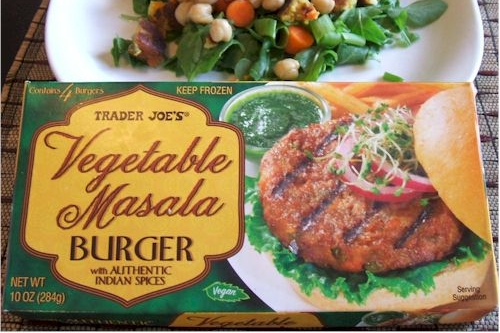

Burger Recipe

Description
A 2 burger recipe that will fill you up and leave you satisfied
Ingredients
- 4 burger buns
- 2 Trader Joe's tikka masala patties
- 1/2 sliced cucumber
- 1 slice of pepper jack cheese
- ketchup and mayo
- 1/4 sliced onion
Steps
- put patties for stove for 10-15 minutes, flip until evenly done on both sides, put cheese on after first flip
- put ketchup and mayo mixture on the bottom buns
- put patty then cheese then cucumbers then onion and then top bun.